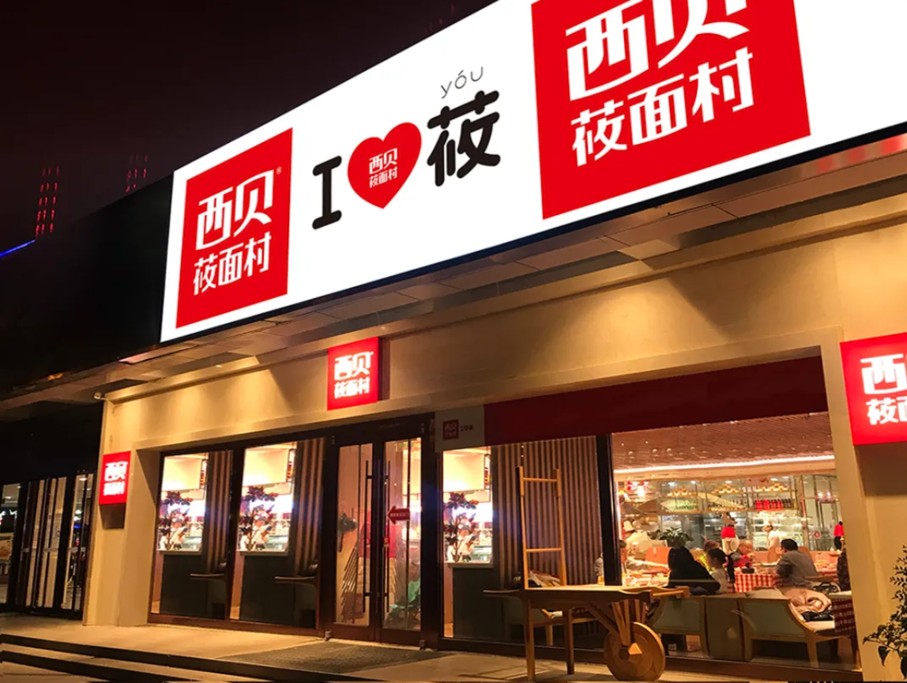
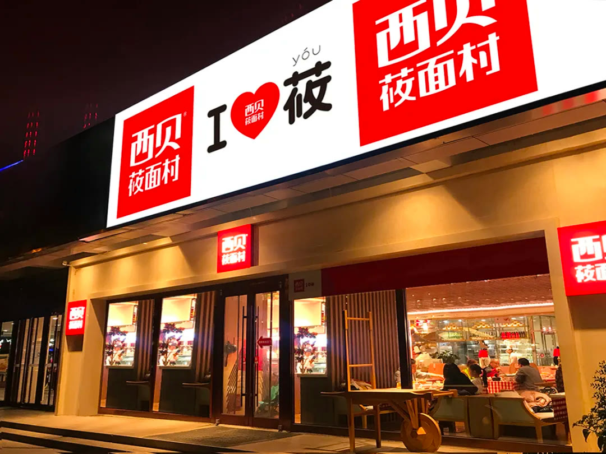
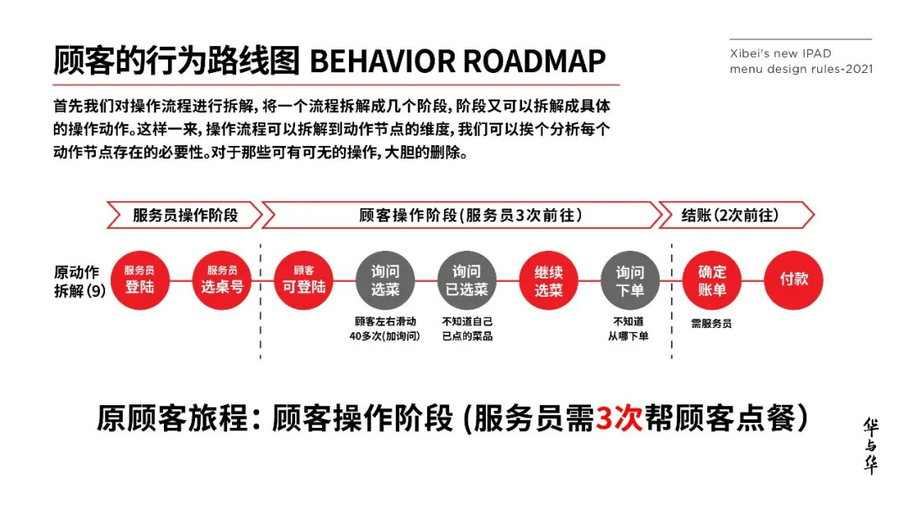

01 · 识别
用“I ❤️ 莜”奠定品牌资产
项目从西贝名称与莜面品类中提炼出一眼能懂、便于反复使用的视觉符号。符号进入门店、产品和传播，使分散触点开始积累同一品牌。

02 · 语言
用品牌谚语降低点餐选择成本
“闭着眼睛点，道道都好吃”不是抽象形容，而是面向顾客的信任承诺。它把菜品品质、品牌信心与下单动作集中在一句话里。

03 · 节奏
营销日历把产品重新生产一遍
围绕年度节点组织产品、门店和传播，让活动不再临时拼凑。每一次营销都重复既有资产，并把产品重新组织成当期购买理由。

04 · 菜单
用“3个购买”重新设计菜单
菜单同时要解决购买理由、购买指南和购买指令。信息排序、产品图片和推荐逻辑围绕顾客决策展开，而不是平均展示所有菜品。

05 · 长期
儿童餐与五年计划建立新资产
“家有宝贝，就吃西贝”把儿童餐从产品项目升级为长期品牌课题；五年计划进一步明确每个阶段应积累的核心资产。